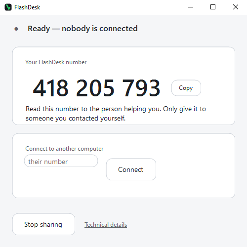

Remote support for your computer.
This runs on a Windows computer, not on a phone. If you are on your phone, type flashdesk.org on the computer that needs help.
Download FlashDesk for Windows
What to do
- Download the file and open it. Nothing installs.
- It shows you a 9-digit number. It is like a phone number for this computer — it is how your helper finds it. It is not a password.
- Read that number to the person helping you.
- Ask them to read you their number too, and check it matches the one that appears on your screen when they connect. If it does not match, press Reject.
Windows will warn you when you open it
A blue box appears. It says:
Windows protected your PC
Microsoft Defender SmartScreen prevented an unrecognized app from starting.
Running this app might put your PC at risk.
More info
Don’t run
There is no way forward on this screen. The only button is Don’t run. The button you need does not exist yet.
Click the small grey words More info. They are a link, not a button, and they are easy to miss. The box then grows and shows:
App: FlashDesk.exe
Publisher: Unknown publisher
Run anyway
Don’t run
The name beside App: is whatever your browser saved the file as. If you have downloaded it before it may read FlashDesk (1).exe or FlashDesk (2).exe. It is the same file.
This screen has two buttons. Press Run anyway, on the left.
If nobody you telephoned yourself asked you to do this, press Don’t run and close this page. Somebody who phoned you out of the blue and talked you as far as a security warning is not helping you.
What “Unknown publisher” means. A publisher is the name of whoever made the file. Mine is not shown because I have not paid a company to attach a verified name to it. If I had, that line would read Publisher: Conor Honor. It would be the same file either way.
Why the warning appears. Windows trusts software it has seen many people run before, and treats everything else as unrecognised. FlashDesk is new, so it is unrecognised. Your computer cannot tell new software from bad software, so it warns about both.
If your browser blocks the download
Most browsers let this download through. If yours stops it, you will see this in the downloads box at the top right:
FlashDesk.exe
Suspicious download blocked
Click the small arrow › at the end of that line. It opens:
This file isn’t commonly downloaded and it may be
dangerous
Learn why Chrome blocks some downloads
Delete from history
Download suspicious file
To continue, press Download suspicious file — the pale button on the right. The solid dark blue one says Delete from history and throws the file away.
Again: if nobody you telephoned yourself asked you to do this, press Delete from history. That is what the dark button is for.
What this does — and what it does not
- It lets your helper see and control your screen — while you watch everything they do.
- Nobody can connect unless you press Accept, every single time. If you do nothing, nobody gets in.
- Letting someone in once does not let them in again. The next time they try, you are asked again.
- While someone is connected, a band across the top of the window turns orange and stays that way for the whole time. You cannot miss it, and they cannot turn it off.
- You can end it at any moment with one click.
- It does not run when you close it. Close the window and it is gone, and nothing was installed.
- Both people run the same file. If you are the one helping, type the other person's number into your own copy and press Connect.
If the download button does not work
The same file is also here: flashdesk.org/dl/FlashDesk.exe — identical in every way. Browsers are more suspicious of it there, so the button above is the easier route, but if that one fails for any reason this one will still work.
Before you let anyone in
If someone phoned you out of the blue and told you to come here, hang up. Only download this if you contacted us yourself.
Who is behind this
FlashDesk is made and run by Conor Honor, an independent computer specialist in Kyiv.
If you want to check who you are talking to, write to me at support@flashdesk.org